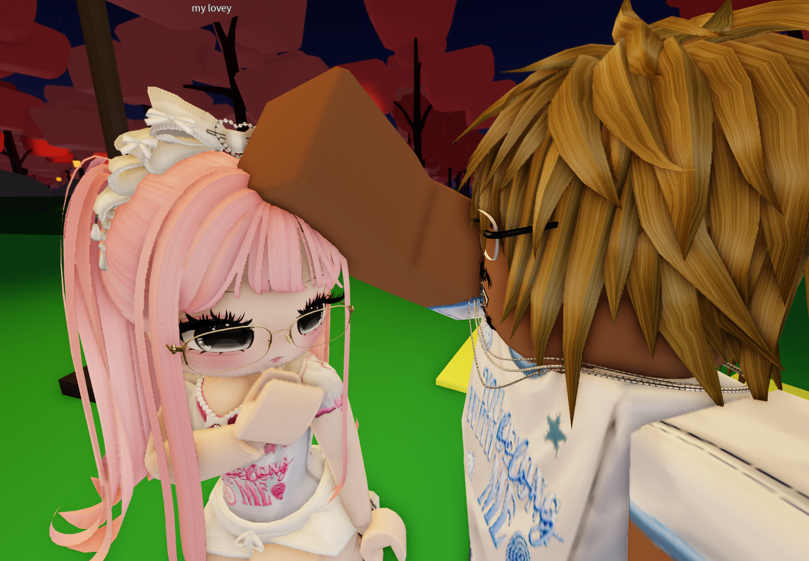

not yet
this letter opens on september 4
a letter for
happy 334 days to us
warning: ang haba nito. basahin mo lahat ha.

334 days & counting
wooohoooo, another month na naman for us. mygosh, ang tagal na pala talaga. parang ang bilis ng panahon. honestly, im just really happy na umabot tayo dito and na hanggang ngayon, ikaw pa rin yung gusto kong kausap, kulitin, and makasama (hindi nga lang personal).
habang tina type ko to, napapaisip ako kung gaano na karami yung napagdaanan natin together. ang dami na nating random conversations, mga kwento, mga kulitan, and kung ano ano pa. actually, ang dami ko pa gustong sabihin, pero hindi ko alam kung paano ko sisimulan.
i dont think i say this enough, pero i really appreciate you, nenew. i appreciate your time, your effort, your patience, and even yung mga simpleng bagay na ginagawa mo. baka minsan hindi ko nasasabi or hindi ko naipapakita nang maayos, pero napapansin ko iyon. i appreciate all of it, especially because its coming from you.
and honestly, i really like having you around. kahit wala naman tayong importanteng pag uusapan, gusto pa rin kitang kausap. kahit random lang yung topic natin, kahit puro kung ano ano lang napag uusapan natin, okay lang sakin. basta ikaw yung kausap ko.
mygosh, inaantok na ako. pero gewch pa rin kasi gusto ko talaga gumawa ng message para sayo. hindi ko rin alam bakit ko pinili gawin to habang inaantok ako, pero okay. hindi ko na rin alam kung gaano na to kahaba. kung may makita kang mali o sobrang formal baka dahil inaantok na ako habang ginagawa ko to hahahaha.
ang haba na nito. basahin mo to lahat, nako, nakakangawit ha. seryoso, kung binabasa mo pa rin to hanggang dito, thank you. pero basahin mo pa rin kasi baka magtampo ako pag hindi mo binasa lahat (joke lang, pero medyo hindi).
parang wala na rin akong idea kung saan papunta tong message na to. basta may gusto lang talaga akong sabihin sayo, tapos tina type ko na lang lahat habang naaalala ko. ganern.
im really thankful for all the memories weve made. kahit yung mga simpleng moments lang, they mean a lot to me. yung mga random na usapan, mga kwento natin, mga kulitan, and syempre yung lagi nating napag uusapan na mga issues sa roblox. hindi ko alam kung bakit parang lagi tayong may bagong roblox issue na pag uusapan, pero somehow naging part na rin siya ng mga conversations natin.
and im excited for more. more days with you, more memories, more tawanan, more kulitan, more kwento, more random conversations, and syempre more roblox issues na pag uusapan natin. gusto ko pa ng maraming moments na tayo lang makakaintindi. gusto ko pa ng maraming araw na ikaw pa rin yung kasama ko sa mga random na bagay sa buhay ko.
syempre, hindi naman laging perfect. may times na magkakaroon tayo ng misunderstandings, may times na maiinis tayo sa isa't isa, may times na hindi natin agad maiintindihan yung nararamdaman ng isa't isa. pero sana, kahit ganon, piliin pa rin nating ayusin. sana kapag may problema, pag usapan natin. ayoko naman na kailangan perfect tayo palagi. gusto ko lang na kahit may bad days, hindi natin basta bibitawan yung isa't isa.
medyo cheesy, pero bahala na. gusto ko lang malaman mo na sobrang importante mo sakin. youve become such a big part of my life, and im really happy that i get to have you in it. hindi ko man laging nasasabi nang maayos, pero i really do care about you. sobra.
thank you for staying. thank you sa patience mo sakin, lalo na sa mga times na kailangan mo akong intindihin. thank you for listening to me, for talking to me, for making me smile, and for making my days better just by being there (kahit minsan roblox issues na naman yung topic natin).
and nenew, i hope you know na you dont have to be perfect for me. you dont have to change yourself just to feel like youre enough. i like you for who you are. yung personality mo, yung pagiging ikaw mo, yung mga little things about you, everything. i hope you know na appreciated ka, kahit minsan hindi ko nasasabi.
im really happy with you, nenew. and im really happy na tayo.
mygosh, ang haba talaga nito. kung umabot ka dito, congratulations. pwede ka na magpahinga. pero thank you for reading everything. kahit ang haba, gusto ko lang talaga sabihin sayo lahat ng nasa isip ko instead na isang simpleng happy 334 days, i love you lang.
and honestly, habang tina type ko to, lalo akong inaantok. pero ayoko pa rin bitawan yung phone kasi gusto ko matapos to. sayang yung nasimulan ko na (kasi makakalimutan ko to bukas). kasi baka bukas paggising ko sabihin ko, mygosh, ako ba gumawa nito, tangina ang haba.
thank you for being mine, for staying, and for being someone i can love and be myself with.
happy 334 days to us, nenew.
wooohoooo, grabe talaga boom taratarat. letsgoooo sa next days, next months, next memories, and hopefully sa marami pang happy days to us.
okay, tapos na talaga.
pwede na ako matulog kasi inaantok na ako habang tina type ko to. finally.
i love you, bembem ko.
swipe or tap the arrows, okay?